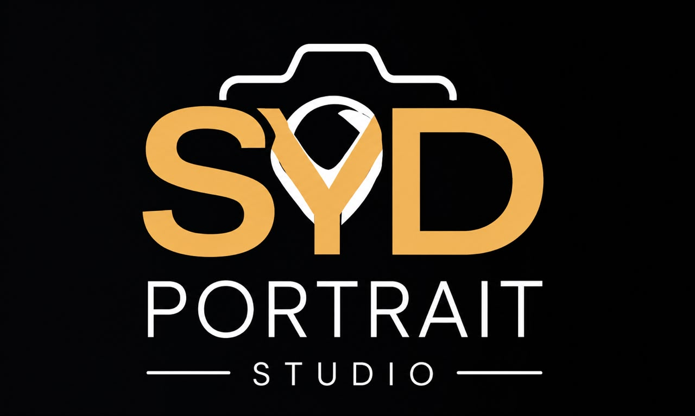

“Hal-abuur waxay beddeshaa aragtida adduunka.”
SYD PORTRAIT STUDIOBaro. Duub. Abuur.
Marka uu dhammaado labada bilood ee koorsada, ardayda ugu sarreysa waxaa la siin doonaa fursad internship ah oo hal sano ah oo ay ku sii baran doonaan tababaro xirfadeed iyo khibrad dhab ah at SYD Portrait Studio.
Mustaqbalkaaga waxuu ka bilaabmaa hal sawir.
Nagu soo sheeg wax badan oo ku saabsan naftaada.
Boosasku way xaddidan yihiin – Ha seegin fursaddan!
Codsigaaga waa la helay. Waxaan kula soo xiriiri doonaa dhowaan.